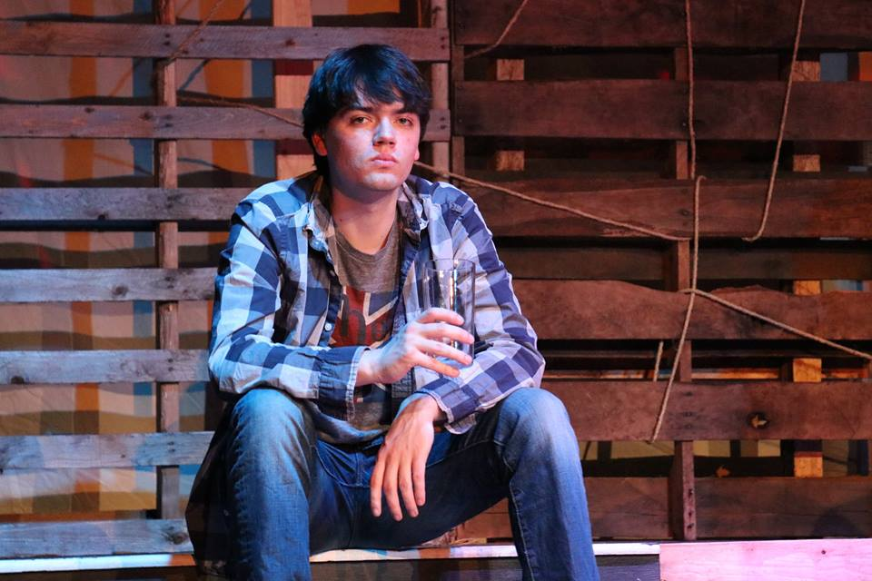

About
Yield To Pedestrians are a four-piece indie punk band from Cape Cod, Massachusetts. Started in 2012, Yield To Pedestrians formed during the band members' senior year of high school after front man, Spencer Hill, moved to Cape Cod from Charlotte, North Carolina. Prior, Yield To Pedestrians operated as a funk and jazz combo, called WHAT. Yield To Pedestrians repertoire consists of original songs, as well as covers that they play for inspiration. Currently, Yield To Pedestrians are in the process of recording their first album, which will feature mixed versions of many songs from their live recordings at the historic Wellfleet Preservation Hall.
Yield To Pedestrians are...
Spencer Hill
Originally trained as a bassist, today Spencer acts as Yield To Pedestrians' vocalist and lead guitar player. Spencer is also responsible for penning the lyrics to the band's original songs, such as What a Ride and Steppin' Out. To exercise his bass experience, he routinely sits in with local bands near his college in Newton, Massachusetts. Unfortunately for these ensembles, Spencer will graduate this May from Lasell College, with a Bachelor of Arts in History. While studying at Lasell, Spencer has been an active participant in the university's theater program, starring in plays and musicals such as Heathers, Suessical, and The Laramie Project.
David Hayden
David is both Yield To Pedestrians' rhythm guitarist and unofficial band manager. A self-taught musician, David often contributes melodies for original songs. When he's not busy jamming, David coordinates shows and ticket sales, as well as maintains Yield To Pedestrians' social media accounts.
Sam Hammond
Now acting as Yield To Pedstrians' bassist, Sam started with WHAT as a jazz saxophonist, specializing in improvisation. With both classical and jazz training, Sam has sat with a number of ensembles, such as Cape Cod's Brewster Band. Currently, Sam studies criminal justice at Westfield State University, and plans to pursue a career as a Massachusetts state trooper after college.
Alex Tulloch
Yield To Pedestrians' drummer, Alex is a classically trained percussionist, as well as a self-taught pianist and guitar player. Additionally, Alex composes many of the melodies for the band's original music. In 2011, Alex worked with local arts advocates to found Nauset Regional High School's World Music Ensemble, which seeks to promote cultural awareness through music and art. As an alumni of the program, Alex often donates time and resources to acting members. In his spare time, Alex utilizes his training in guitar building and instrument service to operate a small instrument customization and repair shop.